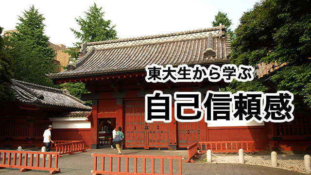

東大生とか東大卒というと人はどんなイメージを持つでしょう？
頭良さそう。秀才の集まり。知識が豊富。超優秀なエリート。真面目そう。ガリ勉。融通きかなそう。オタクっぽい･･･（笑）
まっ、イメージはそれぞれでしょうが勉強ができることは確かですね。つまりペーパーテストに強い。そりゃそうでしょう。日本で1番入るのが難しい大学に行ってるわけですから。
ただ、仕事柄身近に東大生（卒）をたくさん見て接してきた私の印象からいうと意外と普通の人が多い。普通というと何だかつまらない人間を想像するかも知れませんが、そうではなく世間が抱いている「東大生＝怪物的知性の持ち主」は誤解であって、普通に長所もあれば短所もあり、得意なものもあれば不得意なものもある。明るい性格の人もいれば暗い人もいるし、多趣味で社交的な人もいれば孤高のタイプもいる。
議論好きでおしゃべりな人もいれば口下手で寡黙な人もいるし、ソツなく洗練された人もいる一方で不器用で天然（？）の人もいる。
要するに世間一般に見られるすべてのタイプがそろっているという点で、彼らも普通の人間だというのが私の印象なのです。
秀才を鼻にかけた東大生というステレオタイプにはお目にかかったことはなく、概して普通の人たちなのでつき合いにくさは感じません。（そういう秀才タイプは私の主観では、むしろ地方の国立大や一部の有名私大のほうが多い気がします。）
さて、あまり秀才ぶらないかつ多彩な東大生ですが強いて共通点をあげるとすれば1つだけある気がします。
それは自分に対して「自信」をもっているというところです。
「そりゃ東大に受かったくらいだから自信あるんだろ」と言うなら違います。元々自信のあるタイプだからそうなっているというのが正しいと思います。
この場合の「自信」とは自信マンマンで人を見下す類の「自信」ではなく、自分を信じる力が強いつまり、ある種のメンタルの強さという意味です。
仕事などで失敗し落ち込んでも粘り強く困難を克服し、最終的には何とか水準以上まで盛り返してくるタフさがあります。彼らは世間のイメージと違って、頭脳明晰で優秀というより逆境でもメゲない「自己信頼感」のようなメンタルの強靭さを備えている。
それが私から見た東大生（卒業生）の共通点です。
やみくもに努力すれば良いわけじゃない
これはとても大きな要素だと思います。
まず「自信」があることが先に来ます。その上で努力することが成功につながるということです。逆ではありません。東大生の例はそのことを私たちに告げていると思います。
私たちは何かに向かって努力することが大事だと言われ続けてきました。その言葉に間違いはありません。しかし、多くの場合その前提として「今の自分ではダメだから」という自己否定からの出発があります。
今の自分はダメというのは、自己評価が低いということであり、そんな「ダメな自分」にムチ打って苦しい努力をしなければとうてい目標に届かないと思っている限り「成功」はおぼつかないでしょう。
こういう人は「努力」という苦しみを自らに課すことが自己目的化しているわけで、かえって目標を遠ざけてしまうのです。
「努力が目標を遠ざける」と聞けばショックを受けるかも知れませんが、多くの人が努力しているわりにうまくいかないのは前提にこのような「自己否定」があるからです。
ハッキリ言いましょう。今の自分を否定しながらのやみくもな努力はエネルギーのムダ使いです。「努力」という分かりやすい行動に逃げているからです。
形だけの「努力」はアリバイ工作に過ぎません。
それよりもまず自分の価値をしっかり認めること。セルフイメージを肯定的に保ち、自分の潜在能力を信頼することがすべての前提になければなりません。簡単に言えば「根拠のない自信をもて」ということです。自信があって始めて努力も有効になる。
そうは言っても自信のない人に「自信をもて」と言っても難しいのは分かります。
そういう人に言いたいのは、自分に対する自信のなさも根拠がないということ。子どものころから「アレしちゃダメ、こうしなさい」「もっとちゃんとしなさい」「○○できないのは努力が足りない」などと言われ続けたから「自分には才能がない」と思わされたに過ぎないということです。
だから「今の自分はダメ」というのも思い込みに過ぎないと知れば、その記憶を塗り変えることも可能だということになります。
人は誰でも生まれたときは白紙の状態だったはず。それはつまり無限の可能性を秘めていたということです。
しかし、育つうちに周囲から様々な制約を受け他との比較などから、根拠なく「自分はダメだ」「そんなに優れているわけじゃない」と思い込まされてきたのです。
この際そんなレッテルをはがし、もっと「今の自分」を様々な可能性を秘めた人間として肯定してください。セルフイメージを肯定的にすれば極端な言い方ですが何をやってもうまくいきます。自己評価をマイナスからプラスに引き上げること。自分を認め信頼すること。これは恐らく人間として1番目指すべき大切な目標ではないかと思います。
自己肯定、自己信頼感こそが大事
もしあなたが子をもつ親なら、我が子が自己肯定感を十分にもてるように育てて欲しいと思います。
それは単にほめて育てろということではありません。何をしても怒らずにいろということでもありません。
存在そのものを丸ごと受け入れて欲しいということです。
子どもが幼いときはスキンシップもよくとり、行動も共にし寄りそう親は多いと思います。
しかし学童期～思春期になると成績中心に子どもを評価しがちです。テストの点数が良いからホメるとか、運動会で賞を取ったから認めるなどでは条件つきの肯定になってしまいます。
これだと子どもは「良い結果」を出さないとホメられない（愛されない。受け入れられない）と解釈してしまうものです。子育てに「成果主義」をもちこんではいけません。
そうではなく無条件の肯定を子どもに与え続けなければなりません。
子どもは「自分は世界から受け入れられている」という絶対的な安心感を必要としています。自分はこの世から祝福されているという感覚こそが、世界や自己への信頼感につながるのです。
この、世界や自己への信頼感が困難に立ち向かう努力の原動力となるからです。
自己信頼感があるから努力は実る
東大生から学ぶべきは「ガリ勉」ではなくむしろこの「自己信頼感」だと思います。
ところで、この東大生ですが実は同情すべき点があります。彼らが社会に出たとき当然仕事上のミスや失敗を普通に経験します。（何しろ基本的に普通の人ですから当然です）その際必ず言われるのが「あいつ東大出なのに仕事できないんじゃね!?」という陰口。
世間には東大出身者に対して羨望と反感の相反する感情があるようです。
彼らはこのようなプレッシャーとも闘っているのです。大変ですね。